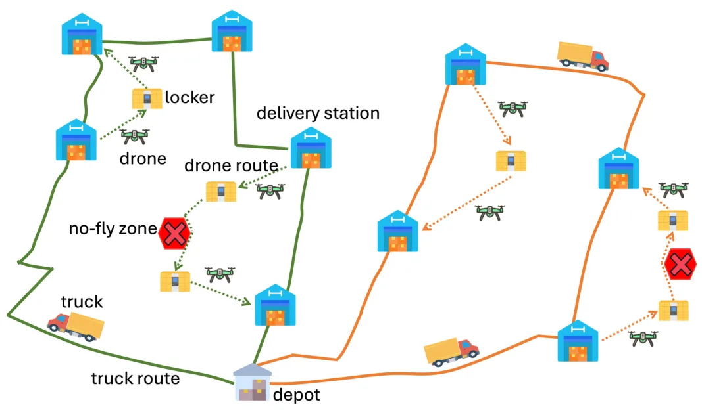
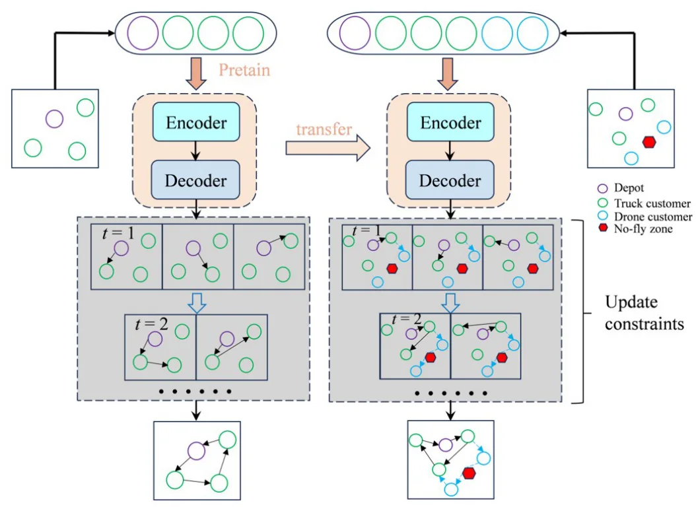
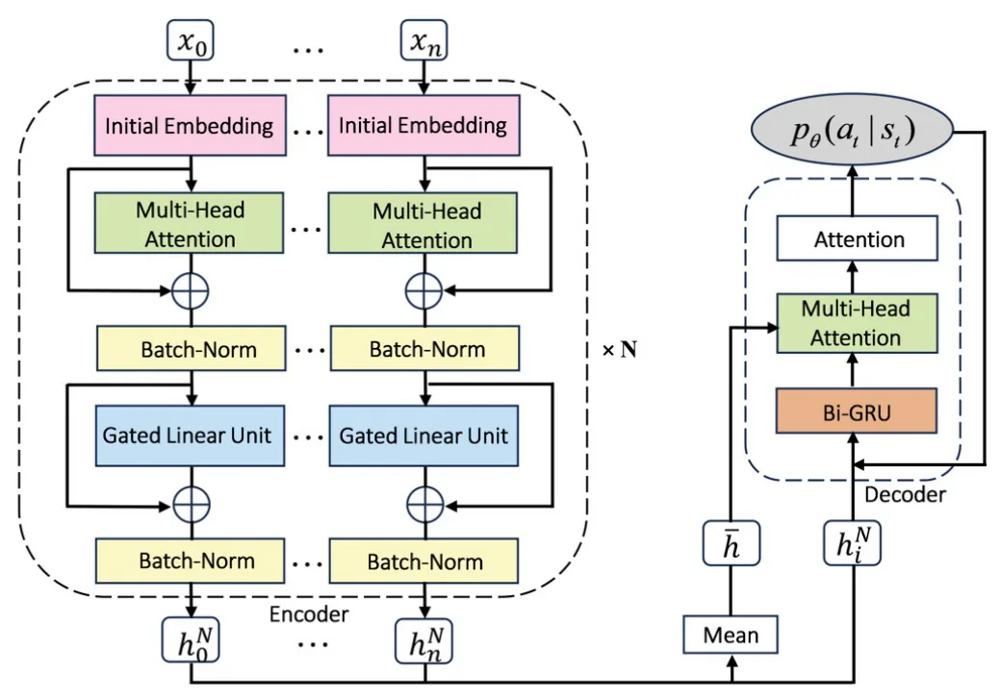
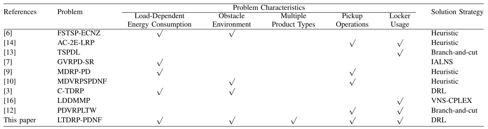
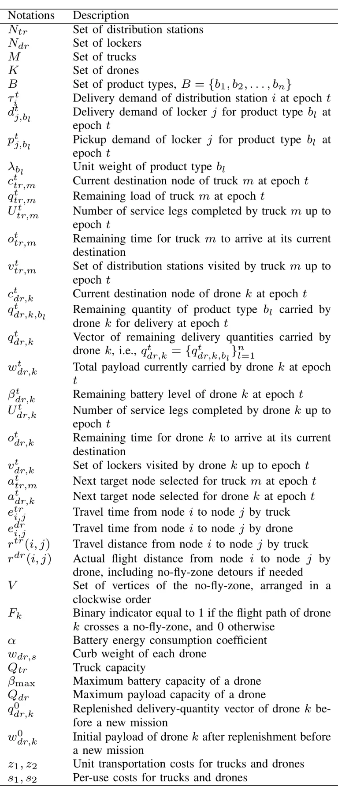

含取送货和禁飞区约束的 locker-based 卡车-无人机路径规划Locker-based Truck-Drone Routing with Integrated Considerations of Pickups, Deliveries, and No-Fly Zones
属于机器人调度/路径规划外围方向，不涉及定位、建图或三维重建；只因无人机和真实运行约束保留。
一句话工作总结
无人机物流任务规划论文，和 SLAM/GNSS 直接关系弱；可低优先级关注禁飞区、载重和电池约束建模。
摘要
论文研究 smart locker 支持无人机起降、包裹交接和电池更换时的 truck-drone last-mile delivery。问题同时考虑投递、退货取件、无人机电池和载重约束，以及绕开禁飞区的路径。作者把路线构造建模为 MDP，并提出两阶段深度强化学习 neural heuristic：第一阶段用 attention encoder 与 BiGRU decoder 解 truck-only CVRP，第二阶段通过 policy transfer 和 hybrid dispatch assignment 构造完整 truck/drone 协同路线。实验称在不同规模实例上多数情况下优于元启发式和神经启发式 baseline，计算时间很短。
Truck-drone delivery is an emerging last-mile logistics mode combining the long-haul capacity of trucks with the flexible service capability of drones. In locker-based operations, smart lockers serve not only as temporary parcel storage facilities but also as automated drone docking and service nodes. These automated nodes support drone takeoff, landing, parcel handover, and battery replacement, thereby significantly extending the service range and operational flexibility of drone-assisted delivery networks. However, practical locker-based delivery systems face complex real-world challenges, requiring the integrated coordination of not only parcel delivery, return pickup, battery-constrained and load-dependent drone flights, but also necessary detours around restricted airspace. To address this practical and multifaceted challenge, this paper introduces a locker-based truck-drone routing problem with integrated considerations of pickups, deliveries, and no-fly zones (LTDRP-PDNF), with the objective of minimizing the total operational cost of a fleet of drone-equipped trucks. We formulate the route construction process as a Markov Decision Process and develop a two-stage deep reinforcement learning-based neural heuristic. The first stage utilizes an attention-based encoder and a Bidirectional Gated Recurrent Unit decoder to solve the truck-only routing problem, formulated as a capacitated vehicle routing problem. The second stage combines a policy-transfer strategy with a hybrid dispatch assignment heuristic to construct fully coordinated truck and drone routes for LTDRP-PDNF. Experiments on instances of different scales demonstrate that the proposed method outperforms metaheuristic and neural heuristic baselines in most cases while maintaining exceptionally short computation times, offering an effective, scalable solution framework under practical operational constraints.
中文解读摘录
- 为什么看：属于机器人/无人机物流规划，不涉及 SLAM 或三维重建；但覆盖无人机执行约束、禁飞区和 truck-drone coordination，可作为任务规划外围参考。
- 方法要点：把问题建模为 MDP，两阶段 deep reinforcement learning neural heuristic：先解 truck-only CVRP，再用 policy transfer 与 hybrid dispatch assignment 构造协同 truck/drone routes。
- 结果信号：在多规模实例上多数情况下优于元启发式和神经启发式 baseline，并保持较短计算时间。
- 跟踪建议：低优先级；若关注无人机城市运行，可重点看 no-fly zone 建模、载重/电池约束与真实地图/GNSS 不确定性是否纳入。
- 链接：abs · PDF
图表/页面预览
{kind=link}

{kind=link}

{kind=link}

{kind=link}

{kind=link}
